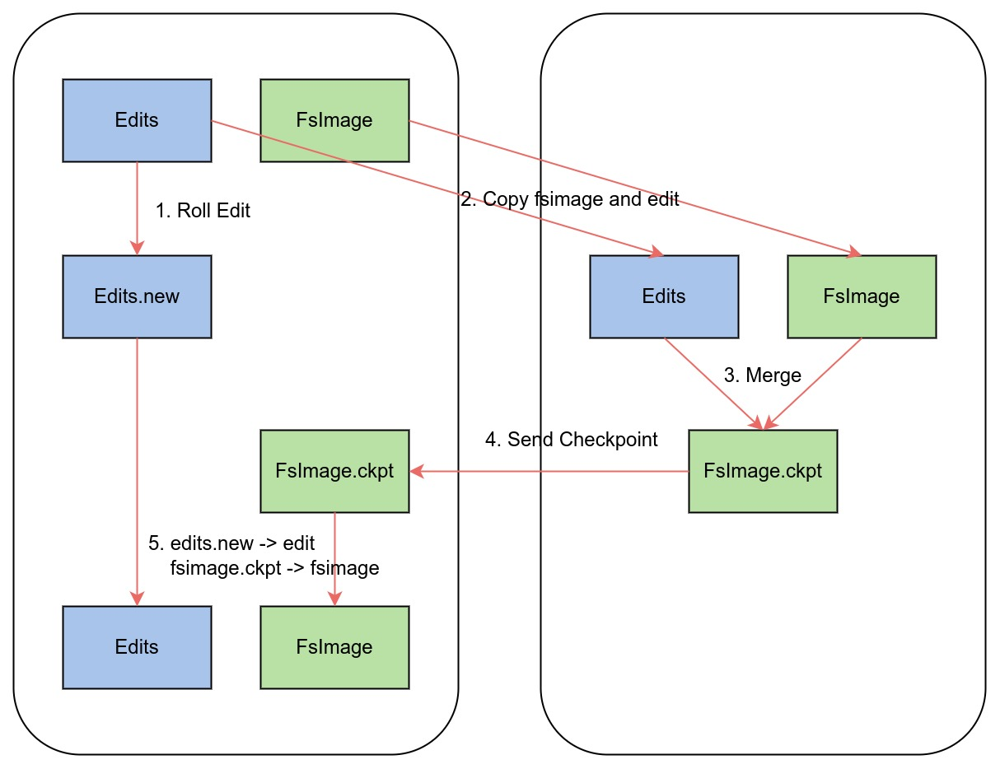

Ch02-Hadoop 之 HDFS 架构
March 17, 2018
HDFS 分布式部署场景下最常见的为两种架构，一种是基本的分布式架构，另一种是 HA 架构。在生产环境中一般都会部署 HA 架构。
1. HDFS 基础架构 #
1.1 基本组成 #
HDFS 由 NameNode，Secondary NameNode，DataNode，Client 这四部分组成。NameNode 负责管理元数据和文件信息；Secondary NameNode 主要用于定期合并 Fsimage 文件和 Edits 文件；DataNode 用户完成数据的存储和读取等；Client 提供了各种操作 HDFS 的 API 接口。
Fsimage 文件：也称为 Checkpoint 文件，记录了 HDFS 文件系统所有目录以及文件相关信息（Block 数量，副本数量，权限等信息），它是 NameNode 内存中元数据序列化后形成的文件。
Edits 文件：记录 Client 对指定 HDFS 文件的增删改操作
1.2 CheckPoint 过程 #

第一阶段：NameNode 启动 #
- 第一次启动 NameNode 格式化后，创建 Fsimage 和 Edits 文件。如果不是第一次启动，直接加载 Fsimage 和 Edits 文件到内存。
- 客户端对元数据进行增删改的请求。
- NameNode 记录操作日志，更新滚动日志。
- NameNode 在内存中对数据进行增删改。
第二阶段：Secondary NameNode 工作 #
- Secondary NameNode 询问 NameNode 是否需要 CheckPoint。直接带回 NameNode 是否执行检查点操作结果。
- Secondary NameNode 请求执行 CheckPoint。
- NameNode 滚动正在写的 Edits 日志。
- 将滚动前的编辑日志和镜像文件拷贝到 Secondary NameNode。
- Secondary NameNode 加载编辑日志和镜像文件到内存并合并。
- 生成新的镜像文件 fsimage.ckpt。
- 拷贝 fsimage.ckpt 到 NameNode。
- NameNode 将 fsimage.ckpt 重新命名成 fsimage。
2. HDFS HA 架构 #
2.1 基本组成 #
HDFS 中，DataNode 自身保存了多个副本，所以某种意义上来说本身就是 HA 架构；NameNode 和 Secondary NameNode 本身却只是单点结构，如果 NameNode 宕机，那么 HDFS 将无法对外提供服务，所以社区就设计了 HA 架构（也叫做 QJM(Quorum Journal Manager) ）。其结构如下图所示。
原理较为简单，将 NameNode 变成多个并将其划分不同角色（1 个 Active NameNode，n 个 Standy NameNode），只让 Active NameNode 提供 NameNode 的服务。接着设计了个名称为 ZKFC 的监控组件，不断的监控所有 NameNode 状态，如果发现 Active NameNode 宕机了，便从 Standby NameNode 中选一个并切换角色为 Active NameNode，同时也会保证只有一个 Active NameNode 在线。
为了能够保证所有 NameNode 看到的 edit 文件一致，所以社区又设计了 JournalNode Cluster（基于 Poxos 算法保证 edit 一致性），这样只需要向 JournalNode Cluster 中写 edit 文件便可。
2.2 Checkpoint 过程 #

| 组件 | 说明 |
|---|---|
| FSEditLog | 所有 EditLog 操作的入口 |
| JournalSet | 集成本地磁盘和 JournalNode 集群上 EditLog 的相关操作 |
| FileJournalManager | 实现本地磁盘上 EditLog 操作 |
| QuorumJournalManager | 实现 JournalNode 集群 EditLog 操作 |
| AsyncLoggerSet | 实现 JournalNode 集群 EditLog 的写操作集合 |
| AsyncLogger | 发起 RPC 请求到 JournalNode，执行具体的日志同步功能 |
| JournalNodeHttpServer | 运行在 JournalNode 节点进程中的 Http 服务，用于接收处于 Standby NameNode 和其它 JournalNode 的同步 EditLog 文件流的请求 |
| JournalNodeRpcServer | 运行在 JournalNode 节点进程中的 RPC 服务，接收 NameNode 端的 AsyncLogger 的 RPC 请求 |
基础架构中的 NameNode 功能由 HA 架构中的 Active NameNode 完成，那 Secondary NameNode 岂不是没了？那 fsimage 和 edit 的工作谁来做呢？
事实上 Secondary NameNode 的确没了，其 merge 工作则由 Standby NameNode 取而代之。它维护了一个线程，会不断的监听 JournalNode Cluster 中的 edit 文件变更，如果满足条件（比如时间到了）那么便拉取 edit 文件并与 fsimage 文件合并，最后重新发送回 Active NameNode。
3. Fsmage 和 edit 小细节 #
3.1 txnid #
文件名自带 txnid，可以用来确认 fsimage 和 edits 之间的关系。同目录中还有一个名为 seen_txid 的文件，保存了最后一个 edits 文件名的 txnid。
edits 文件名称：edits_0000000000000000264-edits_0000000000000000267
fsimage 文件名称：fsimage_0000000000000000267
比如上述两个文件，fsimage (*-0267) 已经将 edits 文件 (*0264-*267) 合并进来了，此时可以删除 edits 文件 (*0264-*267) 文件。
3.2 Fencing 隔离机制 #
HDFS HA 中 利用了 Fencing 机制来避免脑裂问题，将先前的 Active 节点 杀死，然后将本地 NameNode 转换为 Active 状态。Hadoop 公共库中对外提供了两种 fenching 实现：
- sshfence：通过 ssh 登陆目标节点上，使用命令 fuser 将进程杀死（通过 tcp 端口号定位进程 pid，该方法比 jps 命令更准确）
- shellfence（缺省实现），执行一个用户事先定义的 shell 命令（脚本）完成隔离